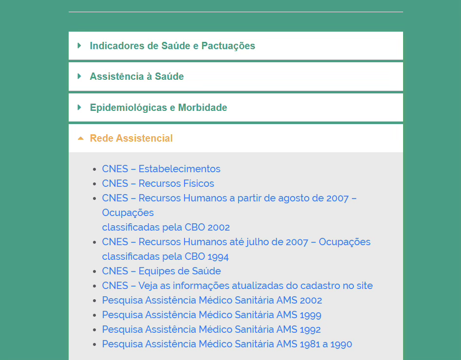

Módulo 3 | Aula 4
Sistemas de Informações de Gestão, Infraestrutura e Orçamento
Disseminação da Informação
Disseminação de Dados Agregados do CNES
De forma agregada, os dados do CNES podem ser acessados por meio de Painéis Estatísticos. Esses oferecem uma plataforma relativamente simples e interativa de tabulação dos dados, com a possibilidade de aplicação de filtros e cruzamentos de variáveis. Suas principais vantagens são a rapidez para obtenção de dados agregados por estabelecimentos de saúdes, recursos físicos, recursos humanos e equipes de saúde, permitindo análises detalhadas da capacidade instalada.
Figura 2 - Interface do Tabnet para acesso aos dados do CNES.

Fonte: https://datasus.saude.gov.br/informacoes-de-saude-tabnet/
As opções para extração de dados do CNES no Tabnet estão disponíveis no site do DATASUS. O Tabnet do CNES disponibiliza a série histórica do cadastro, por mês de competência, estando disponível com defasagem de até 45 dias.
Para acessar você deve selecionar a opção “Rede Assistencial” na página inicial do Tabnet (ver Figura 2). Uma vez selecionado, o sistema fornecerá a opção de acesso aos dados a partir de diferentes unidades de análise: estabelecimentos (quantidade de estabelecimentos de saúde cadastrados); recursos físicos (quantidade de leitos, consultórios, equipamentos ou instalações de obstetrícia e neonatologia); Recursos Humanos (quantidade de profissionais (indivíduos) e de vínculos cadastrados no CNES) e Equipes de Saúde (quantidade de equipes da Atenção Primária à Saúde).
O Tabnet permite a visualização dos dados públicos a partir de diversos cruzamentos e filtros baseados nas dimensões cadastradas no sistema, tais como localização geográfica, horário de funcionamento dos estabelecimentos, infraestrutura de instalações físicas e equipamentos e oferta de serviços especializados.
Principal limitação: rigidez na disponibilização dos dados.
O Tabnet possui limitações na flexibilidade de cruzamento e nas desagregações dos dados. Por exemplo, nesse sistema não é possível obter as coordenadas geográficas dos estabelecimentos de saúde.
O ElastiCNES representa a evolução dos dados abertos do CNES. Criado para substituir os antigos relatórios estáticos do CNESNet, esta nova plataforma consiste em um conjunto de Painéis Estatísticos dinâmicos.
O acesso se dá pelo endereço https://elasticnes.saude.gov.br
A Vantagem: o ElastiCNES oferece painéis moldáveis, interativos e intuitivos.
O usuário pode realizar cruzamentos multiajustáveis, personalizando a visualização dos dados conforme sua necessidade de pesquisa.
O que podemos encontrar nos painéis? Atualmente, a ferramenta oferece visualizações detalhadas, conforme a seguir.
- Panorama geral: total de estabelecimentos, unidades ativas, gestão, natureza jurídica e conveniados ao SUS.
- Instalações físicas: áreas destinadas à assistência ambulatorial, urgência/emergência e hospitalar.
- Equipamentos: equipamentos de diagnóstico por imagem, odontologia, infraestrutura, entre outros.
- Leitos: visão geral dos leitos existentes (SUS e não SUS) e um painel exclusivo para Leitos covid-19 (UTI e Suporte Ventilatório).
- Serviços Especializados: unidades com serviços especializados, como Oncologia, Neurologia, Fisioterapia, entre outros.
- Produção SUS: consolidação da produção ambulatorial (SIA) e hospitalar (SIH).
- Marcações: habilitações, incentivos, regras contratuais e participação em programas (ex.: Rede de Atenção à Saúde - RAS).
- Profissionais: profissionais que atuam em estabelecimentos de saúde
- Equipes: equipes de Saúde da Atenção Primária.
Limitações: série histórica disponibilizada é muito curta se comparada àquela disponibilizada no Tabnet.
Por ser recente, boa parte das funcionalidades pretendidas ainda não estão disponíveis. A disponibilidade de notas técnicas é escassa na plataforma.
Disseminação dos microdados do CNES
Os microdados do CNES podem ser baixados no site: https://cnes.datasus.gov.br/pages/downloads/arquivosBaseDados.jsp .
Os dados são disponibilizados por mês/ano de cadastro, o que pode tornar demorada a obtenção de séries temporais longas. Uma saída possível para a obtenção desses dados de forma mais ágil é a utilização do Pacote Microdata SUS disponibilizada para o R. Para mais informações sobre esse método de obtenção dos dados, clique aqui.
A disseminação dos microdados do CNES ocorre a partir de uma estrutura relacional complexa, dividida entre as “Tabelas Principais” (LFCES), que contêm os dados brutos das unidades, profissionais e serviços. A granularidade dos dados permite a identificação única de cada estabelecimento por meio do código CNES possibilitando o cruzamento de informações entre diversas tabelas distintas.
Principal limitação: complexidade relacional.
O CNES não é uma tabela única, mas um banco de dados relacional altamente fragmentado. Para obter informação completa, o pesquisador precisa realizar múltiplos cruzamentos (joins).